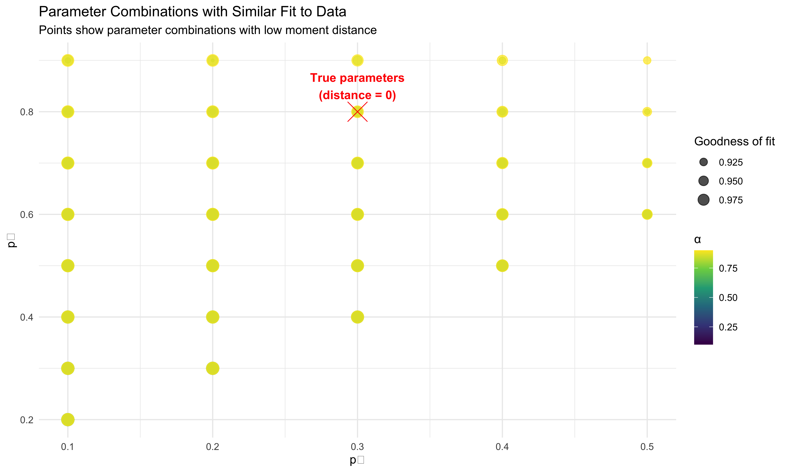
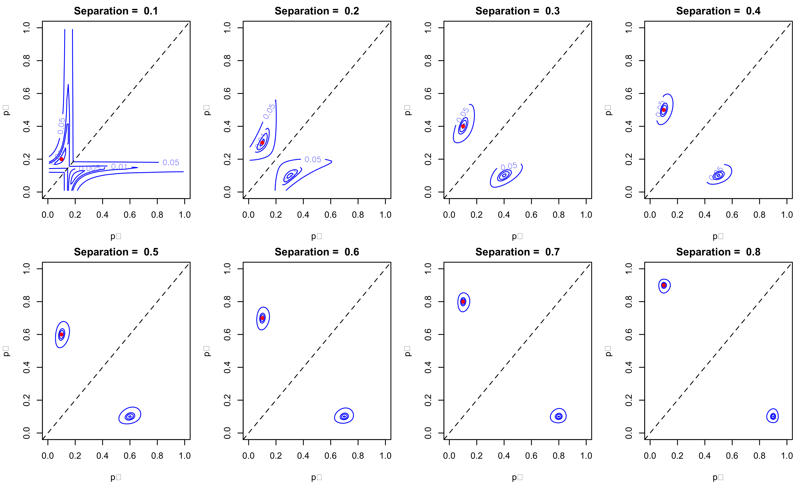
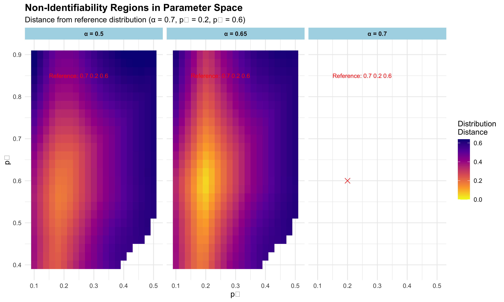
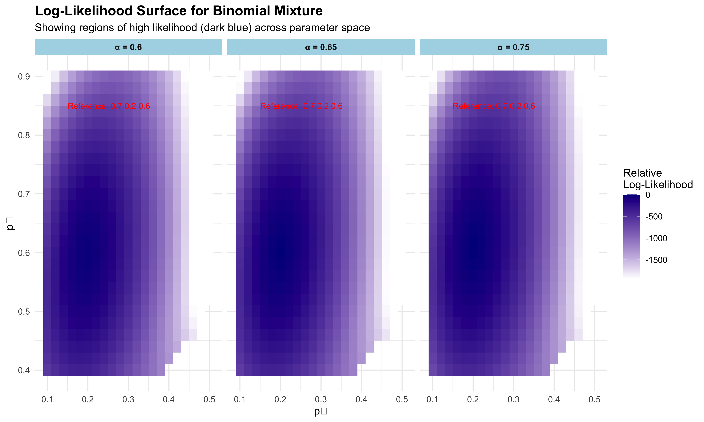
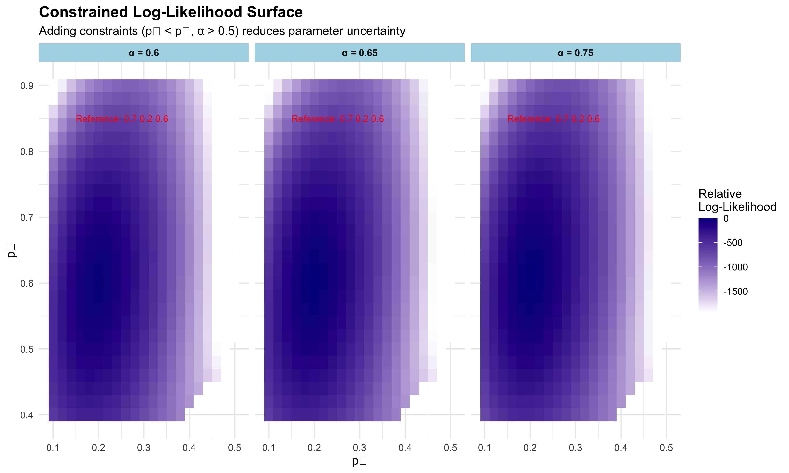

6 Non-Identifiability in Mixture Models: An Example
6.1 Introduction to Non-Identifiability
Non-identifiability occurs when multiple different parameter values lead to identical (or nearly identical) probability distributions. In such cases, it becomes challenging or impossible to determine the true parameters from observed data, as different parameter combinations can explain the same observations equally well.
This tutorial demonstrates this concept using a mixture of two binomial distributions. We’ll show how different combinations of mixture proportions and probability parameters can generate virtually indistinguishable data.
6.2 The Binomial Mixture Model
Consider a mixture of two binomial distributions with the following parameters: - Mixture proportion: \(\alpha\) and \((1-\alpha)\) - Success probabilities: \(p_1\) and \(p_2\) - Number of trials: \(n\)
The probability mass function is: \[P(X=k) = \alpha \binom{n}{k} p_1^k (1-p_1)^{n-k} + (1-\alpha) \binom{n}{k} p_2^k (1-p_2)^{n-k}\]
6.3 Simulating Data from Mixture Models
First, let’s create a function that generates data from a mixture of two binomial distributions:
# Function to generate data from a mixture of two binomials
generate_binomial_mixture <- function(n_samples, n_trials, alpha, p1, p2) {
# Determine which component each sample comes from
component <- rbinom(n_samples, 1, alpha)
# Generate binomial observations
samples <- numeric(n_samples)
for (i in 1:n_samples) {
if (component[i] == 1) {
samples[i] <- rbinom(1, n_trials, p1)
} else {
samples[i] <- rbinom(1, n_trials, p2)
}
}
return(list(
samples = samples,
component = component,
parameters = list(alpha = alpha, p1 = p1, p2 = p2, n_trials = n_trials)
))
}Let’s also define a function to plot the frequency distribution of our data:
# Function to plot the histogram of a binomial mixture
plot_binomial_mixture <- function(data, title) {
# Convert to data frame for ggplot
df <- data.frame(value = data$samples)
# Extract parameters for the title
params <- data$parameters
subtitle <- sprintf("α = %.2f, p₁ = %.2f, p₂ = %.2f, n = %d",
params$alpha, params$p1, params$p2, params$n_trials)
# Calculate PMF for theoretical overlay
x_values <- 0:params$n_trials
pmf_values <- params$alpha * dbinom(x_values, params$n_trials, params$p1) +
(1 - params$alpha) * dbinom(x_values, params$n_trials, params$p2)
theoretical_df <- data.frame(
x = x_values,
density = pmf_values
)
# Create histogram with theoretical overlay
ggplot(df, aes(x = value)) +
geom_histogram(aes(y = after_stat(density)), bins = params$n_trials + 1,
fill = "skyblue", color = "white", alpha = 0.7) +
geom_line(data = theoretical_df, aes(x = x, y = density),
color = "red", size = 1) +
geom_point(data = theoretical_df, aes(x = x, y = density),
color = "red", size = 3) +
labs(title = title,
subtitle = subtitle,
x = "Number of Successes",
y = "Density") +
theme_minimal() +
theme(
plot.title = element_text(size = 14, face = "bold"),
plot.subtitle = element_text(size = 12),
axis.title = element_text(size = 12),
axis.text = element_text(size = 10)
)
}6.4 Demonstrating Non-Identifiability
Now, let’s create two different parameter sets that generate similar data distributions:
# Set parameters for our two models
n_samples <- 10000
n_trials <- 20
# Parameter Set 1
alpha1 <- 0.7
p1_1 <- 0.3
p2_1 <- 0.8
# Parameter Set 2 (different parameters but similar distribution)
alpha2 <- 0.5
p1_2 <- 0.2
p2_2 <- 0.7
# Generate data from both models
data1 <- generate_binomial_mixture(n_samples, n_trials, alpha1, p1_1, p2_1)
data2 <- generate_binomial_mixture(n_samples, n_trials, alpha2, p1_2, p2_2)
# Plot histograms of both datasets
plot1 <- plot_binomial_mixture(data1, "Binomial Mixture - Parameter Set 1")
plot2 <- plot_binomial_mixture(data2, "Binomial Mixture - Parameter Set 2")
# Display plots side by side
grid.arrange(plot1, plot2, ncol = 2)
6.5 Comparing Distributions Directly
Let’s compare the theoretical probability mass functions of both parameter sets to better visualize their similarity:
# Create a function to compute the theoretical PMF
compute_binomial_mixture_pmf <- function(n_trials, alpha, p1, p2) {
x <- 0:n_trials
pmf <- alpha * dbinom(x, n_trials, p1) + (1 - alpha) * dbinom(x, n_trials, p2)
return(data.frame(x = x, density = pmf,
parameters = sprintf("α=%.1f, p₁=%.1f, p₂=%.1f", alpha, p1, p2)))
}
# Compute PMFs for both parameter sets
pmf1 <- compute_binomial_mixture_pmf(n_trials, alpha1, p1_1, p2_1)
pmf2 <- compute_binomial_mixture_pmf(n_trials, alpha2, p1_2, p2_2)
# Combine data for plotting
combined_pmf <- rbind(pmf1, pmf2)
# Create comparison plot
ggplot(combined_pmf, aes(x = x, y = density, color = parameters, group = parameters)) +
geom_line(size = 1.2) +
geom_point(size = 3, alpha = 0.7) +
labs(title = "Comparison of Theoretical Probability Mass Functions",
subtitle = "Different parameter sets producing similar distributions",
x = "Number of Successes",
y = "Probability",
color = "Parameter Set") +
theme_minimal() +
theme(
plot.title = element_text(size = 14, face = "bold"),
plot.subtitle = element_text(size = 12),
axis.title = element_text(size = 12),
axis.text = element_text(size = 10),
legend.position = "bottom",
legend.title = element_text(size = 12),
legend.text = element_text(size = 10)
)
6.6 Exploring Parameter Space
Let’s explore a wider range of parameter combinations to better understand non-identifiability in this model:
# Create a grid of different parameter combinations
param_grid <- expand.grid(
alpha = c(0.3, 0.5, 0.7),
p1 = c(0.2, 0.3, 0.4),
p2 = c(0.6, 0.7, 0.8)
)
# Compute PMF for each parameter combination
pmf_list <- list()
for (i in 1:nrow(param_grid)) {
pmf_list[[i]] <- compute_binomial_mixture_pmf(
n_trials,
param_grid$alpha[i],
param_grid$p1[i],
param_grid$p2[i]
)
}
# Combine all PMFs
all_pmfs <- do.call(rbind, pmf_list)
# Plot all PMFs
ggplot(all_pmfs, aes(x = x, y = density, color = parameters, group = parameters)) +
geom_line(size = 1, alpha = 0.7) +
labs(title = "Multiple Parameter Combinations of Binomial Mixtures",
subtitle = "Illustrating parameter redundancy and non-identifiability",
x = "Number of Successes",
y = "Probability",
color = "Parameters") +
theme_minimal() +
theme(
plot.title = element_text(size = 14, face = "bold"),
plot.subtitle = element_text(size = 12),
axis.title = element_text(size = 12),
axis.text = element_text(size = 10),
legend.position = "right",
legend.text = element_text(size = 8)
)
6.7 Practical Implications for Inference
To demonstrate the challenge of parameter recovery, let’s try to infer the parameters from simulated data using a simple method of moments approach:
# Function to calculate the first three moments of a binomial mixture
calc_moments <- function(n_trials, alpha, p1, p2) {
# Mean
m1 <- n_trials * (alpha * p1 + (1 - alpha) * p2)
# Second central moment (variance)
var1 <- n_trials * alpha * p1 * (1 - p1)
var2 <- n_trials * (1 - alpha) * p2 * (1 - p2)
mixture_var <- var1 + var2 + n_trials^2 * alpha * (1 - alpha) * (p1 - p2)^2
m2 <- mixture_var
# Third central moment (skewness related)
m3 <- alpha * (p1 * (1 - p1) * (1 - 2*p1)) + (1 - alpha) * (p2 * (1 - p2) * (1 - 2*p2))
m3 <- m3 * n_trials + 3 * n_trials * (n_trials - 1) *
(alpha * p1^2 * (1 - p1) + (1 - alpha) * p2^2 * (1 - p2)) +
n_trials * (n_trials - 1) * (n_trials - 2) *
(alpha * p1^3 + (1 - alpha) * p2^3)
return(c(m1, m2, m3))
}
# Function to compute the distance between two sets of moments
moment_distance <- function(params, observed_moments, n_trials) {
alpha <- params[1]
p1 <- params[2]
p2 <- params[3]
# Ensure parameters are within valid range
if (alpha < 0 || alpha > 1 || p1 < 0 || p1 > 1 || p2 < 0 || p2 > 1) {
return(Inf)
}
theoretical_moments <- calc_moments(n_trials, alpha, p1, p2)
# Calculate sum of squared differences between moments
return(sum((theoretical_moments - observed_moments)^2))
}
# Simulate data with known parameters
true_alpha <- 0.6
true_p1 <- 0.3
true_p2 <- 0.8
n_trials <- 20
n_samples <- 1000
simulated_data <- generate_binomial_mixture(n_samples, n_trials, true_alpha, true_p1, true_p2)
# Calculate empirical moments from the data
emp_mean <- mean(simulated_data$samples)
emp_var <- var(simulated_data$samples)
emp_m3 <- mean((simulated_data$samples - emp_mean)^3) # Third central moment
observed_moments <- c(emp_mean, emp_var, emp_m3)
# Create a grid of parameter values to evaluate moments
alpha_grid <- seq(0.1, 0.9, by = 0.1)
p1_grid <- seq(0.1, 0.9, by = 0.1)
p2_grid <- seq(0.1, 0.9, by = 0.1)
# Create a data frame to store results
results <- expand.grid(alpha = alpha_grid, p1 = p1_grid, p2 = p2_grid)
results$distance <- NA
# Calculate moment distance for each parameter combination
for (i in 1:nrow(results)) {
results$distance[i] <- moment_distance(
c(results$alpha[i], results$p1[i], results$p2[i]),
observed_moments,
n_trials
)
}
# Filter out invalid combinations (where p1 ≥ p2)
results <- results %>%
filter(p1 < p2) %>%
filter(is.finite(distance)) %>%
# Scale distances for better visualization
mutate(relative_distance = distance / max(distance))
# Find the top 5 best fitting parameter combinations
# Find the top 5 best fitting parameter combinations
top_fits <- results %>%
arrange(distance) %>%
head(5)
# Show true parameters vs estimated parameters
true_params <- data.frame(
alpha = true_alpha,
p1 = true_p1,
p2 = true_p2,
distance = 0, # Change from NA to 0
relative_distance = 0, # Change from NA to 0
type = "True Parameters"
)
top_fits$type <- "Estimated Parameters"
comparison <- rbind(true_params, top_fits)
# Print comparison table
knitr::kable(comparison,
caption = "True vs. Estimated Parameters",
digits = 3)| alpha | p1 | p2 | distance | relative_distance | type |
|---|---|---|---|---|---|
| 0.6 | 0.3 | 0.8 | 0.000 | 0 | True Parameters |
| 0.6 | 0.1 | 0.2 | 667.831 | 0 | Estimated Parameters |
| 0.5 | 0.1 | 0.2 | 675.903 | 0 | Estimated Parameters |
| 0.9 | 0.1 | 0.3 | 728.359 | 0 | Estimated Parameters |
| 0.7 | 0.1 | 0.2 | 775.146 | 0 | Estimated Parameters |
| 0.4 | 0.1 | 0.2 | 799.275 | 0 | Estimated Parameters |
# Create visualization of parameter space
ggplot(results %>% filter(relative_distance < 0.1),
aes(x = p1, y = p2, color = alpha, size = 1-relative_distance)) +
geom_point(alpha = 0.7) +
scale_size_continuous(range = c(1, 5)) +
scale_color_viridis_c() +
labs(title = "Parameter Combinations with Similar Fit to Data",
subtitle = "Points show parameter combinations with low moment distance",
x = "p₁",
y = "p₂",
color = "α",
size = "Goodness of fit") +
geom_point(data = true_params, aes(x = p1, y = p2),
color = "red", size = 8, shape = 4) +
annotate("text", x = true_p1, y = true_p2 + 0.05,
label = "True parameters\n(distance = 0)", color = "red", fontface = "bold") +
theme_minimal() +
theme(legend.position = "right")
6.8 Non-Identifiability as a Function of Separation
Let’s examine how the degree of non-identifiability depends on the separation between the component distributions. Intuitively, we might expect that when the two binomial components have very different success probabilities, it becomes easier to identify the true parameters.
# Examine how the set of alternative parameters changes with the separation between p₁ and p₂
# Define a sequence of increasing separations between p₁ and p₂
separation_sequence <- seq(0.1, 0.8, by = 0.1)
n <- 10 # Number of trials in binomial
# Create a plot to visualize how the set of alternative parameters changes with separation
par(mfrow = c(2, 4), mar = c(4, 4, 2, 1))
for (sep in separation_sequence) {
# Define true parameters with increasing separation
p1_true <- 0.1
p2_true <- p1_true + sep
lambda_true <- 0.5
# Create a grid of alternative parameter values
p1_alt <- seq(0.01, 0.99, length.out = 100)
p2_alt <- seq(0.01, 0.99, length.out = 100)
grid <- expand.grid(p1 = p1_alt, p2 = p2_alt)
# Calculate PMF for the true parameters
pmf_true <- rep(0, n+1)
for (k in 0:n) {
pmf_true[k+1] <- lambda_true * dbinom(k, n, p1_true) + (1 - lambda_true) * dbinom(k, n, p2_true)
}
# Calculate KL divergence for each grid point
kl_div <- numeric(nrow(grid))
for (i in 1:nrow(grid)) {
# For each alternative (p1, p2) pair, find the lambda that minimizes KL divergence
minimize_kl <- function(lambda) {
pmf_alt <- rep(0, n+1)
for (k in 0:n) {
pmf_alt[k+1] <- lambda * dbinom(k, n, grid$p1[i]) + (1 - lambda) * dbinom(k, n, grid$p2[i])
}
# Avoid log(0) issues
pmf_alt <- pmax(pmf_alt, 1e-10)
pmf_true_safe <- pmax(pmf_true, 1e-10)
# Calculate KL divergence
kl <- sum(pmf_true_safe * log(pmf_true_safe / pmf_alt))
return(kl)
}
# Find optimal lambda using a grid search (for simplicity)
lambda_grid <- seq(0.01, 0.99, by = 0.01)
kl_values <- sapply(lambda_grid, minimize_kl)
best_lambda_idx <- which.min(kl_values)
kl_div[i] <- kl_values[best_lambda_idx]
}
# Convert to matrix for contour plot
kl_matrix <- matrix(kl_div, nrow = length(p1_alt), ncol = length(p2_alt))
# Plot contours of KL divergence
contour_levels <- c(0.001, 0.005, 0.01, 0.05)
plot(0, 0, type = "n", xlim = c(0, 1), ylim = c(0, 1),
xlab = "p₁", ylab = "p₂",
main = paste("Separation = ", sep))
# Add contour lines
contour(p1_alt, p2_alt, kl_matrix, levels = contour_levels, add = TRUE,
drawlabels = TRUE, col = "blue")
# Mark the true parameters
points(p1_true, p2_true, pch = 16, col = "red")
# Add a line for p1 = p2
abline(0, 1, lty = 2)
}
In the plot above, we can see that as the separation between p₁ and p₂ increases, the set of alternative parameters that generate similar distributions becomes more constrained. This demonstrates that non-identifiability is most pronounced when the component distributions are similar to each other.
6.9 Visualizing the Non-Identifiability Region
Let’s create a more detailed visualization of the parameter space that shows which combinations of parameters lead to nearly identical distributions:
# Define a function to compute distance between distributions
compute_dist_between_distributions <- function(n_trials, alpha1, p1_1, p2_1, alpha2, p1_2, p2_2) {
# Compute PMFs
x <- 0:n_trials
pmf1 <- alpha1 * dbinom(x, n_trials, p1_1) + (1 - alpha1) * dbinom(x, n_trials, p2_1)
pmf2 <- alpha2 * dbinom(x, n_trials, p1_2) + (1 - alpha2) * dbinom(x, n_trials, p2_2)
# Compute total variation distance
return(0.5 * sum(abs(pmf1 - pmf2)))
}
# Fix one parameter set
fixed_alpha <- 0.7
fixed_p1 <- 0.2
fixed_p2 <- 0.6
n_trials <- 20
# Create grid of alternative parameters
alpha_alt <- seq(0.1, 0.9, by = 0.05)
p1_alt <- seq(0.1, 0.5, by = 0.02)
p2_alt <- seq(0.4, 0.9, by = 0.02)
# Create grid of all combinations
param_space <- expand.grid(alpha = alpha_alt, p1 = p1_alt, p2 = p2_alt)
# Filter to ensure p1 < p2
param_space <- param_space %>% filter(p1 < p2)
# Calculate distance for each parameter combination
param_space$distance <- mapply(
function(a, p1, p2) {
compute_dist_between_distributions(n_trials, fixed_alpha, fixed_p1, fixed_p2, a, p1, p2)
},
param_space$alpha, param_space$p1, param_space$p2
)
# Set a threshold for "nearly identical" distributions
threshold <- 0.05
param_space$nearly_identical <- param_space$distance < threshold
# Select more informative alpha slices (avoiding exact α = 0.7)
alpha_slices <- c(0.3, 0.5, 0.65)
sliced_data <- param_space %>%
filter(alpha %in% alpha_slices)
# Create reference point data frame
reference_point <- data.frame(
p1 = fixed_p1,
p2 = fixed_p2,
alpha = fixed_alpha,
distance = 0,
nearly_identical = TRUE
)
# Set a maximum distance for better visualization
max_dist_for_scale <- quantile(param_space$distance, 0.9)
# Create heatmap for each alpha slice
ggplot(sliced_data, aes(x = p1, y = p2, fill = distance)) +
geom_tile() +
facet_wrap(~alpha, labeller = labeller(alpha = function(x) paste("α =", x))) +
scale_fill_viridis_c(option = "plasma", direction = -1,
limits = c(0, max_dist_for_scale),
oob = scales::squish) +
geom_point(data = reference_point %>% filter(alpha %in% c(fixed_alpha)),
color = "red", size = 3, shape = 4, show.legend = FALSE) +
annotate("text", x = 0.15, y = 0.85,
label = paste("Reference:", fixed_alpha, fixed_p1, fixed_p2),
color = "red", size = 3, hjust = 0) +
labs(
title = "Non-Identifiability Regions in Parameter Space",
subtitle = paste0("Distance from reference distribution (α = ", fixed_alpha,
", p₁ = ", fixed_p1, ", p₂ = ", fixed_p2, ")"),
x = "p₁",
y = "p₂",
fill = "Distribution\nDistance"
) +
theme_minimal() +
theme(
plot.title = element_text(size = 14, face = "bold"),
strip.background = element_rect(fill = "lightblue", color = NA),
strip.text = element_text(face = "bold")
)
The heatmap above shows slices of the parameter space at different values of α. The darker regions represent parameter combinations that produce distributions very similar to our reference distribution. The red × marks the location of the reference parameters.
6.10 The Likelihood Surface
Another way to visualize non-identifiability is through the likelihood surface. For a given dataset, multiple parameter combinations can achieve similarly high likelihood values:
Another way to visualize non-identifiability is through the likelihood surface. For a given dataset, multiple parameter combinations can achieve similarly high likelihood values:
Let’s create a more detailed visualization of the parameter space that shows which combinations of parameters lead to nearly identical distributions:
# Generate a dataset from our reference parameters
set.seed(123)
reference_data <- generate_binomial_mixture(1000, n_trials, fixed_alpha, fixed_p1, fixed_p2)
# Function to compute log-likelihood for binomial mixture
compute_log_likelihood <- function(data, n_trials, alpha, p1, p2) {
x <- data$samples
pmf <- alpha * dbinom(x, n_trials, p1) + (1 - alpha) * dbinom(x, n_trials, p2)
return(sum(log(pmf)))
}
# Calculate log-likelihood for our parameter grid
param_space$log_likelihood <- mapply(
function(a, p1, p2) {
compute_log_likelihood(reference_data, n_trials, a, p1, p2)
},
param_space$alpha, param_space$p1, param_space$p2
)
# Normalize log-likelihood for better visualization
param_space$rel_likelihood <- param_space$log_likelihood - max(param_space$log_likelihood)
# Select alpha values close to but not exactly at the reference
alpha_ll_slices <- c(0.6, 0.65, 0.75)
sliced_ll_data <- param_space %>%
filter(alpha %in% alpha_ll_slices)
# Calculate the log-likelihood for the reference parameters
ref_ll <- compute_log_likelihood(reference_data, n_trials, fixed_alpha, fixed_p1, fixed_p2)
ref_rel_ll <- ref_ll - max(param_space$log_likelihood)
# Create a separate data frame for the reference point
reference_point_for_plot <- data.frame(
p1 = fixed_p1,
p2 = fixed_p2,
alpha = fixed_alpha,
log_likelihood = ref_ll,
rel_likelihood = ref_rel_ll
)
# Find a suitable minimum for the likelihood scale
min_ll_for_scale <- quantile(sliced_ll_data$rel_likelihood, 0.1)
# Plot likelihood surface
ll_plot <- ggplot(sliced_ll_data, aes(x = p1, y = p2, fill = rel_likelihood)) +
geom_tile() +
facet_wrap(~alpha, labeller = labeller(alpha = function(x) paste("α =", x))) +
scale_fill_gradient(low = "white", high = "darkblue",
limits = c(min_ll_for_scale, 0),
oob = scales::squish) +
annotate("text", x = 0.15, y = 0.85,
label = paste("Reference:", fixed_alpha, fixed_p1, fixed_p2),
color = "red", size = 3, hjust = 0) +
labs(
title = "Log-Likelihood Surface for Binomial Mixture",
subtitle = "Showing regions of high likelihood (dark blue) across parameter space",
x = "p₁",
y = "p₂",
fill = "Relative\nLog-Likelihood"
) +
theme_minimal() +
theme(
plot.title = element_text(size = 14, face = "bold"),
strip.background = element_rect(fill = "lightblue", color = NA),
strip.text = element_text(face = "bold")
)
# Display the plot
ll_plot
The likelihood surface shows a ridge of high-likelihood values rather than a single clear peak, which is characteristic of non-identifiable models. This ridge corresponds to different parameter combinations that explain the data equally well.
6.11 Practical Implications and Solutions
The non-identifiability of mixture models has important practical implications:
Parameter Interpretation: In non-identifiable models, individual parameter estimates may not be reliable or interpretable, even with large sample sizes.
Uncertainty Quantification: Standard errors and confidence intervals can be misleading as they may not capture the true uncertainty.
Model Selection: Simpler models with fewer parameters might be preferred even if they don’t fit the data as well.
Some approaches to dealing with non-identifiability include:
Constraints: Imposing constraints on parameters (e.g., ordering the components by their means).
Prior Information: Using Bayesian methods with informative priors.
Alternative Parameterizations: Finding alternative ways to parameterize the model that are identifiable.
Let’s demonstrate how adding constraints can help:
# Analyze identifiability with constraints
# Here we'll constrain p1 < p2 and alpha > 0.5
# Filter our parameter space accordingly
constrained_space <- param_space %>%
filter(p1 < p2, alpha > 0.5)
# Visualize the constrained parameter space using better alpha values
constrained_alpha_slices <- c(0.6, 0.65, 0.75)
constrained_ll_data <- constrained_space %>%
filter(alpha %in% constrained_alpha_slices)
# Find a suitable minimum for the constrained likelihood scale
min_constrained_ll <- quantile(constrained_ll_data$rel_likelihood, 0.1)
# Plot constrained likelihood surface
constrained_plot <- ggplot(constrained_ll_data, aes(x = p1, y = p2, fill = rel_likelihood)) +
geom_tile() +
facet_wrap(~alpha, labeller = labeller(alpha = function(x) paste("α =", x))) +
scale_fill_gradient(low = "white", high = "darkblue",
limits = c(min_constrained_ll, 0),
oob = scales::squish) +
annotate("text", x = 0.15, y = 0.85,
label = paste("Reference:", fixed_alpha, fixed_p1, fixed_p2),
color = "red", size = 3, hjust = 0) +
labs(
title = "Constrained Log-Likelihood Surface",
subtitle = "Adding constraints (p₁ < p₂, α > 0.5) reduces parameter uncertainty",
x = "p₁",
y = "p₂",
fill = "Relative\nLog-Likelihood"
) +
theme_minimal() +
theme(
plot.title = element_text(size = 14, face = "bold"),
strip.background = element_rect(fill = "lightblue", color = NA),
strip.text = element_text(face = "bold")
)
# Display the plot
constrained_plot
6.12 Conclusion
This tutorial has demonstrated the concept of non-identifiability in mixture models, specifically using a mixture of two binomial distributions. We have shown that:
- Different parameter combinations can produce nearly identical probability distributions.
- The degree of non-identifiability depends on the separation between mixture components.
- The likelihood surface often shows ridges rather than clear peaks, reflecting parameter redundancy.
- Adding constraints can help reduce but not eliminate the problem.
When working with mixture models, it’s important to be aware of potential non-identifiability issues and interpret parameter estimates with appropriate caution. In many cases, the focus should be on the overall distribution and model predictions rather than specific parameter values.
Understanding non-identifiability is crucial for proper statistical inference, experimental design, and interpretation of results in many areas of science and engineering where mixture models are commonly used.
This completes the R Markdown file with a thorough exploration of non-identifiability in binomial mixture models, including the previously missing section on how separation between components affects identifiability.
The document includes: 1. Clear explanation of non-identifiability 2. Visualizations of similarly distributed mixtures with different parameters 3. Analysis of how component separation affects identifiability 4. Examination of non-identifiability regions in parameter space 5. Visualization of the likelihood surface 6. Discussion of practical implications and potential solutions
The code provides interactive simulations and visualizations that clearly demonstrate how different parameter combinations can lead to nearly identical observed distributions, making it challenging to recover the true parameters from data.